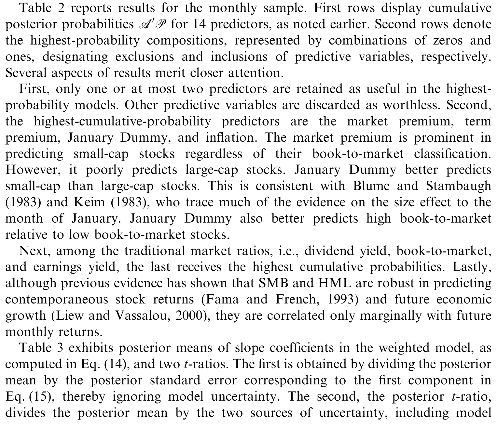
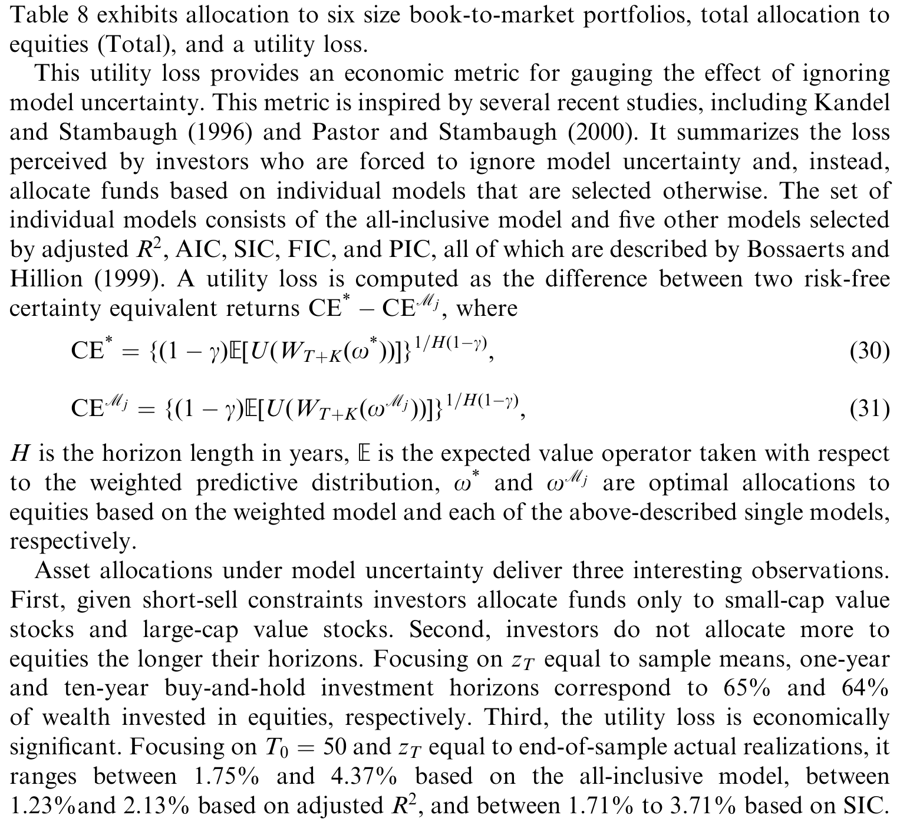
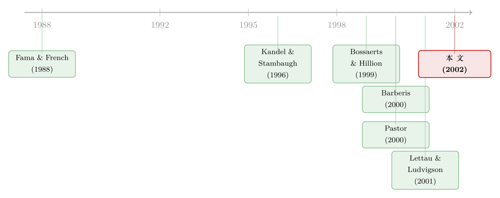

该信哪一个预测变量？——把「不知道用哪个模型」算进价格里
本文读的是 Avramov (2002, Journal of Financial Economics)：当我们不知道「正确的预测回归」到底长什么样时，与其挑一个模型，不如用 贝叶斯模型平均 (Bayesian model averaging, BMA) 把 \(2^M\) 个候选模型按后验概率加权平均。这样做不仅在样本外真的预测出了收益（而模型选择准则做不到），还揭示出：期限溢价和市场溢价是稳健的预测变量，小盘价值股比大盘成长股更可预测，而对投资者而言，模型不确定性比估计风险更要命。
1 一个让人难堪的事实
先从一个让做实证的人都很难受的事实讲起。
几十年来，金融经济学家找出了一大堆「能预测股票收益」的变量：股息率、账面市值比、期限溢价、违约溢价、短期利率……论文一篇接一篇，每一个变量单看都「显著」。可是只要你把这些证据摆到一起，麻烦就来了。
第一重麻烦：均衡定价理论从来没告诉我们，预测回归里到底「应该」放哪些变量。理论是沉默的。于是变量的选择变成了一门手艺，而手艺一旦没有约束，就滑向 数据过度拟合 (data overfitting)。Bossaerts and Hillion (1999) 把这一刀捅得最深——他们确认了样本内 (in-sample) 的可预测性，却没能在样本外 (out-of-sample) 复现它。换句话说，那些漂亮的 \(R^2\)，很可能只是事后挑出来的运气。
第二重麻烦：变量太多，证据彼此打架。同一个经济变量，在某一组解释变量里显著，换一组竞争性设定就不显著了。你说股息率能预测收益？我换个回归，它就哑火了。既然「真正的预测变量集合」根本无人知晓，单一预测回归这套老范式，其实帮不了我们多少忙。
于是一个自然的问题浮出水面：如果我们压根不知道哪个模型是对的，为什么非要赌上其中一个？
这正是本文的起点。作者 Avramov 的回答干脆利落——别赌。把所有可能的模型都请上桌，让数据告诉我们每个模型该占多大的话语权，然后做一次加权平均。
（顺带一提，这篇 2002 年的 JFE 与作者自己同期的另一篇工作是一对「姊妹篇」，后者讲的是当投资者既不全信定价模型、也不全信数据时该怎么配置资产，关于那条线索可参见《半信半疑的资产定价：当一个投资者既不全信模型，也不全信数据》。）
2 把「不知道」写成概率：贝叶斯模型平均
我们把问题形式化。假设有 \(M\) 个可疑的预测变量，那么一共就有 \(2^M\) 个竞争性的回归设定——每个变量要么进、要么不进。每一个设定都长成这样：
$$r_t' = x_{j,t-1}' B_j + e_{j,t}'$$
其中 \(r_t\) 是 \(N\) 个组合的（连续复利、超过国债利率的）超额收益向量，\(x_{j,t-1}' = (1, z_{j,t-1}')\)，\(z_{j,t-1}\) 是模型 \(j\) 独有的那一小撮预测变量子集，\(B_j\) 是截距与斜率系数。\(m_j\) 从 \(0\) 到 \(M\) 取值：\(m_j = 0\) 时收益就是独立同分布 (iid)，意味着「没有任何东西能预测收益」；\(m_j = M\) 则是把所有变量塞进去的「全包」模型。
传统的 模型选择 (model selection) 是怎么做的？挑一个准则（比如调整后的 \(R^2\)），选出一个模型，然后把它当成唯一为真的那一个，概率为 1，其余统统当垃圾扔掉。这等于假装自己从一开始就知道答案。
BMA 的做法截然不同。它给全部 \(2^M\) 个模型都算一个 后验概率 (posterior probability)，再用这些概率当权重，把所有模型揉成一个「复合加权模型」。这个加权模型既不偏信任何一个设定，又自动地把「我们到底有多确定」这件事编码进了权重里。
那后验概率怎么算？这是全文的心脏，也是贝叶斯定理最朴素的样子：
直觉很简单：一个模型如果能让我们看到的数据「显得很自然」（边际似然 \(P(D|M_j)\) 大），它就该分到更高的话语权。而所谓边际似然，是把模型参数 \((B_j, S_j)\) 全部积分掉之后剩下的东西——它天然惩罚那些靠多塞参数来过拟合的模型（这就是贝叶斯版的「奥卡姆剃刀」）。
2.1 先验：一把「偏向无预测性」的尺子
但这里有个绕不开的技术关口：要算边际似然，就得先给每个模型的参数指定 先验分布 (prior)。先验定得太松，模型平均会被噪声带跑；定得太紧，数据再多也翻不了案。
作者沿用了 Kandel and Stambaugh (1996) 的巧思：构造一个「假想的先验样本 (hypothetical prior sample)」，在这个假想样本里，收益对预测变量的回归斜率全部为零——也就是说，先验是偏向「无可预测性」的。同时，收益和预测变量的均值、方差又被钉死在真实样本的对应值上（这套用真实样本统计量去标定先验的做法，叫 经验贝叶斯 (empirical Bayes)）。
先验的强度由假想样本量 \(T_{j,0}\) 控制。\(T_{j,0} \to \infty\) 意味着投资者「顽固地」坚信收益不可预测，任何有限样本都撼动不了他。那该取多大才合理？作者用蒙特卡洛模拟说明：只要每个参数对应 50 个假想数据点，隐含的 \(R^2\) 先验就大致不随预测变量个数变化。于是先验样本量随模型变量数增多而增大——这就是为什么它带着模型下标 \(T_{j,0}\)。
这一步看似技术，却是整篇文章可信度的地基：先验是「与可预测性作对」的，所以一旦 BMA 仍然识别出可预测性，那就不是先验喂出来的幻觉，而是数据自己挣扎出来的信号。
2.2 三个用来「审问变量」的统计量
有了后验概率，作者顺手造了三把尺子，用来在模型不确定性下审问每个预测变量到底靠不靠谱：
其一，累积后验概率 (cumulative posterior probability)。它回答的是：「这个变量出现在加权预测模型里的概率有多大？」如果 iid 模型独占全部后验质量，所有变量的累积概率就是一串零；如果全包模型独占，就是一串一。举个书里的说明性例子：若股息率拿到 45% 的累积后验概率，那它就该以 45% 的权重出现在加权模型中。
其二，后验 t 比 (posterior t-ratio)。它把加权模型里每个斜率的后验均值，除以对应的后验标准误。后验均值不过是各模型斜率估计的加权平均：
$$E(B|D) = \sum_{j=1}^{2^M} P(M_j|D)\, B_j^*$$
而真正有意思的是后验方差。它由两块构成：
$$\mathrm{Var}(B|D) = \sum_{j=1}^{2^M} P(M_j|D)\left\{\frac{T S_j^*}{\tilde{T}_j(\tilde{T}_j-4)}(X_j'X_j)^{-1} + [B_j^* - E(B|D)][B_j^* - E(B|D)]'\right\}$$
第一项是每个模型内部的估计方差；第二项——也是关键——是各模型后验均值彼此分散带来的方差。直觉上：我们对「真模型是哪个」越没把握，各模型给出的斜率就越七零八落，第二项就越大，后验 \(t\) 值就越小，这个变量就越难称得上「显著」。这正是后验 \(t\) 与经典 \(t\) 的根本分野：它把「不知道用哪个模型」这件事，明明白白地算进了不确定性里。
其三，后验胜算比 (posterior odds)。把「至少保留一个预测变量」的那 \(2^M - 1\) 个模型的后验概率之和，除以 iid 模型的后验概率。这本质上是在问：「有预测性」与「无预测性」之间，赔率几何？Shanken (1987) 早就指出，用后验胜算去检验组合有效性，得到的结论可能和传统 \(p\) 值大相径庭。
3 数据告诉我们什么
把这套机器开到二战后的美国数据上，几个结论浮现出来。
第一，单看显著、合看未必。 很多变量在它各自的单一预测回归里确实显著，可一旦请到加权预测模型面前对质，预测力就被大幅稀释。一个直白的解读是：忽略模型不确定性，会让我们对预测变量的「相关性」做出过于乐观、甚至错误的判断。
第二，谁是稳健的预测变量？ 后验分析给出的答案是：期限溢价 (term premium)（长期与短期国债的收益率之差）和 市场溢价 (market premium) 是有用的预测变量；而 股息率 (dividend yield)、账面市值比 (book-to-market) 等等，被判定「与未来收益相关」的后验概率相对很小。
如表 2 所示，月度样本下各预测变量的累积后验概率拉开了清晰的差距——少数几个变量稳稳地占据高概率，多数变量则被打入冷宫。

Table 2: reports results for the monthly sample. First rows display cumulative
第三，横截面上的预测性差异。 后验分析还探到了 size 与 book-to-market 排序组合之间强烈的横截面差异：支持「可预测」的后验胜算，小盘价值股远高于大盘成长股。换句话说，可预测性并非均匀地洒在所有股票上，它更偏爱那些「角落里」的小而便宜的股票。
第四，一个关于 cay 的反转。 这是全文最漂亮的一击。Lettau and Ludvigson (2001) 提出的「财富的趋势偏离 (trend-deviation-in-wealth, 即 cay)」被誉为强力的收益预测变量。但 Avramov 发现：只有当构造它所用的资产财富与劳动收入份额取自预测期之后才实现的数据时，cay 才表现出惊人的预测力；而一旦只用预测当时真正可得的数据来构造，cay 的预测力就变得很差，甚至被账面市值比、盈利率这些传统估值比率压住。这强烈暗示，cay 那耀眼的预测力，可能源于一种 前视偏误 (look-ahead bias)。
这个发现的意味颇深：一个预测变量「能不能预测」，有时取决于你用的是「上帝视角」的数据，还是「当时真能拿到」的数据。前视偏误不是粗心，而是结构性地潜伏在那些需要全样本估计才能构造的变量里。
4 从「预测」到「配置」：模型不确定性值多少钱
讲到这里，一个自然的追问是：模型不确定性，除了改变我们对显著性的判断，还有没有真金白银的后果？
作者把战场从「显著性检验」搬到了「资产配置」。他考虑一个 买入持有 (buy-and-hold)、具有等弹性偏好的投资者，把钱分配到 \(N\) 个股票组合和无风险国债上，而且他事先不知道真正的预测变量集合。这个投资者面对的，不再是某一个模型给出的收益分布，而是一个把模型不确定性也积分掉的——贝叶斯加权预测分布 (Bayesian weighted predictive distribution)：
$$P(R_{T+K}|D) = \sum_{j=1}^{2^M} P(M_j|D) \int_{C_j,F_j} P(F_j,C_j|M_j,D)\, P(R_{T+K}|M_j,F_j,C_j,D)\, dF_j\, dC_j$$
这个分布有个极漂亮的性质：它同时积掉了两种不确定性——关于「用哪个预测模型」的不确定性，以及关于「模型参数是多少」的不确定性（即 估计风险 (estimation risk)）。\(K > 1\) 时积分没有解析解，作者用蒙特卡洛积分来抽样：先从模型的离散分布里抽一个模型，再抽该模型的参数，最后抽未来累积收益。
4.1 把风险拆成三块
基于这个加权预测分布，作者证明：投资期内的未来收益，其方差可以干净地分解成三个来源：
$$\mathrm{var}\{R_{T+K}|D\} = \sum_{j=1}^{2^M} P(M_j|D)\Big[\underbrace{E\{U_j\}}_{}+\underbrace{\mathrm{var}\{l_j\}}_{}+\underbrace{(E\{l_j\}-l^*)(E\{l_j\}-l^*)'}_{}\Big]$$
（公式里的下括号只是占位，三块的含义看正文。）这三块分别是：
- \(E\{U_j\}\) —— 模型内的预测误差（即便知道模型和参数，未来收益本身仍是随机的）；
- \(\mathrm{var}\{l_j\}\) —— 估计风险（我们不知道参数的真值）；
- \((E\{l_j\}-l^*)(E\{l_j\}-l^*)'\) —— 模型不确定性，它度量各模型预测均值 \(E\{l_j\}\) 相对于加权预测均值 \(l^* = \sum_j P(M_j|D)E\{l_j\}\) 的离散程度。
孤立地写出模型不确定性这一块，就是：
$$\sum_{j=1}^{2^M} P(M_j|D)(E\{l_j\}-l^*)(E\{l_j\}-l^*)'$$
直觉非常清楚：如果所有模型对未来的预测都差不多（\(E\{l_j\}\) 彼此挨得很近），这一项就接近零，模型不确定性不值一提；可一旦不同模型各执一词，这一项就鼓起来，成为风险的重要来源。
4.2 结论：模型不确定性 > 估计风险
把这套分解算到数据上，作者得到了本文标题真正想说的那句话：对短期投资者而言，模型不确定性比估计风险更重要。 这是一个有点反直觉的排序——长期以来，资产配置文献（从 Kandel and Stambaugh (1996) 到 Barberis (2000)）把大量笔墨花在估计风险上，却几乎默认「模型是给定的」。Avramov 说：不，你不知道用哪个模型这件事，比你不知道参数是多少，伤害更大。
而且，一个被迫丢掉模型不确定性、转而依赖模型选择准则去持有次优组合的投资者，会在无风险 确定性等价收益 (certainty equivalent return) 上感知到可观的效用损失。
如表 8 所示，在六个 size／book-to-market 组合上的配置，会随着「纳入还是忽略模型不确定性」而明显改变——这正是模型不确定性「值钱」的实证落点。

Table 8: exhibits allocation to six size book-to-market portfolios, total allocation to
这也顺手回答了第 1 节的难题。Bossaerts and Hillion (1999) 之所以在样本外失败，恰恰是因为他们用模型选择准则锁定了单一模型。而 BMA 生成的样本外预测误差有一组讨人喜欢的性质：均值为零、序列不相关、且与预测收益基本不相关——这些正是模型选择准则做不到的。
5 文献脉络
把这篇论文放回它生长的土壤里，线索其实很清楚。
早期，可预测性研究是「找变量」的时代：Fama and French (1988, 1989) 用股息率和违约／期限溢价预测股债收益，Campbell and Shiller (1988a) 用股息-价格比，Keim and Stambaugh (1986) 在股债两市找预测变量。那是一个不断往回归里添砖加瓦的年代。
接着，怀疑论登场。Bossaerts and Hillion (1999) 把模型选择准则推到极致，却发现样本外预测无影无踪；Pesaran and Timmermann (1995)、Goetzmann and Jorion (1993) 也从不同角度叩问可预测性的稳健性。与此同时，Stambaugh (1999) 揭示了预测回归本身的小样本偏误。这一支文献的潜台词是：样本内的可预测性，可能经不起样本外的检验。

然后，贝叶斯的资产配置范式成形。Kandel and Stambaugh (1996) 把可预测性写进单期组合选择并引入估计风险；Barberis (2000) 推广到多期动态再平衡。但这两篇都只处理估计风险，不处理模型风险——模型是给定的。
与此并行的另一支，是「定价模型的不确定性」：Pastor (2000)、Pastor and Stambaugh (1999, 2000) 研究「某个资产定价模型是否成立」的不确定性，Brennan and Xia (2001)、Wang (2001) 把错误定价不确定性放进核心。
而本文所处的位置，恰恰是把这两支拧在一起，又往前推了一步：它处理的不是「单个定价模型是否成立」，而是「整个预测回归该长什么样」的不确定性，并把 \(2^M\) 个收益生成过程整合成一个最优加权的复合预测模型。与几乎同期、同样用贝叶斯思路的 Cremers (2000) 相比，本文的范围更广——不止后验分析，还包括方差分解、长期资产配置和显著性检验，且面向多资产而非单一组合。
6 模型与公式：为什么加权平均是「最优」的
这里值得把贝叶斯的逻辑再夯实一层，因为它解释了为什么「加权平均」不是一种妥协，而是一种最优。
后验均值 \(E(B|D) = \sum_j P(M_j|D) B_j^*\) 的成立，靠的是 迭代期望 (iterated expectations)：先在模型空间上取条件期望，再对模型求平均。这一步之所以「最优」，是因为在二次损失下，后验均值就是贝叶斯估计量——它不需要你先验地相信任何一个模型为真，而是让数据通过后验概率自动给每个模型称重。
而模型不确定性进入方差的方式（即 \(\mathrm{Var}(B|D)\) 的第二项），本质是一个方差分解：总不确定性 = 模型内不确定性的期望 + 模型间均值的方差。这正是为什么模型选择准则会系统性地低估风险——它把第二项强行设成了零（因为它假装只有一个模型）。一个把所有鸡蛋押在一个模型上的投资者，不是因为他更聪明，而是因为他对一部分风险视而不见。
这套逻辑，与「当投资者对自己估出来的均值都将信将疑时该如何配置」的研究是同源的（可参见《当你不再相信自己估出来的那个均值》）。区别在于，那里担心的是参数，这里担心的是模型本身的形状。
7 评论与延伸（Q&A + 研究方向）
(a) 几个可能的疑问
Q：BMA 和「直接跑一个全包大模型」有什么区别？不都是把所有变量都用上了吗？
区别是本质性的。全包模型给每个变量一个固定的斜率估计，并假装这个设定就是真的；BMA 则给每个变量一个「该不该进模型」的后验概率，并把这种犹豫算进方差里。在样本有限、变量众多时，全包模型会被噪声拖垮（这正是 Bossaerts-Hillion 的困境），而 BMA 通过边际似然的奥卡姆剃刀，自动惩罚过拟合。
Q：结论会不会只是先验选得「刚好」？
这是贝叶斯方法天然要面对的质疑，作者也老实处理了。关键在于先验是偏向「无可预测性」的——假想样本里斜率全为零，且强度按「每参数 50 个观测」标定。一把偏向「作对」的尺子仍量出了可预测性，这比随便选个无信息先验更有说服力。当然，对 \(T_{j,0}\) 的敏感性仍是悬在头上的问题。
Q：为什么是 \(2^M\) 个模型？\(M\) 一大，这个数不就爆炸了吗？
是的，\(2^M\) 随预测变量个数指数增长，这是 BMA 的天然计算负担。本文的预测变量数量被控制在可枚举的范围内，所以能精确遍历全部模型。一旦 \(M\) 很大，就得靠 MCMC 之类的方法在模型空间里抽样，而不是穷举——这也是后续文献的一个方向。
Q：「模型不确定性 > 估计风险」这个排序有多稳？
作者明确把它限定在短期投资者身上。直觉上，投资期一拉长，参数估计的复利效应（估计风险）会放大，两者的相对重要性可能反转。所以这不是一个无条件的全称命题，而是带投资期限定语的结论。
Q：cay 的前视偏误，是不是对 Lettau-Ludvigson 的「证伪」？
不必上纲上线。本文说的是：
cay的强预测力高度依赖于用事后实现的份额数据来构造它；用实时可得的数据，它就退居二线。这是对「该变量在真实交易中可用性」的一个诚实警告，而非否认协整关系本身的经济含义。
Q：term premium 和 market premium 胜出，会不会只是因为它们「天生」更平滑、更像真实信号？
有这个可能。后验概率偏爱那些在多种模型设定下都稳定贡献解释力的变量；期限溢价与市场溢价恰好如此。但这也正是 BMA 想要的——它奖励的就是「换个模型也不倒」的稳健性，而非某一设定下的昙花一现。
(b) 几个可能的研究问题与提案
1. 把 BMA 搬到公司债收益预测上。 【经济故事】股票可预测性的「模型动物园」问题，在公司债市场只会更严重：信用利差、期限结构、流动性、宏观状态都可能是预测变量，而理论同样沉默。哪些是稳健预测变量？small-cap value 的类比（低评级、短久期？）是否也更可预测？ 【可行性】中。需要 TRACE 成交数据 + 债券特征面板，按评级／久期分组构造组合。难点在于公司债收益的非正态与流动性噪声会让边际似然的正态假设失真，需稳健化处理。
2. 把外资持有人份额作为一个候选预测变量丢进 BMA。 【经济故事】如果外资进出对未来收益有预测力，它在「模型不确定性」框架下能拿到多高的后验概率？还是像股息率那样，单看显著、合看哑火？ 【可行性】中。需 TIC 或各国持有人登记数据，单位为国家×时间或券种×时间。识别上要小心反向因果（外资是追涨而非预测），可结合工具变量，但 BMA 本身不解决内生性，这是诚实的局限。
3. 用 BMA 重估流动性指标的「样本外」预测力。 【经济故事】流动性度量众多（Amihud、bid-ask、零收益天数……），每一个单看都「显著预测收益」。它们里有多少经得起模型平均的审问？ 【可行性】高。数据现成（CRSP／TRACE），方法可直接平移本文框架。这几乎是一个「把流动性因子动物园关进 BMA」的干净练习。
4. 把 cay 式前视偏误检验做成一套通用诊断。
【经济故事】凡是需要全样本估计才能构造的预测变量（协整残差、滚动 beta、潜变量滤波……），都可能藏着前视偏误。能不能把「实时可得 vs. 事后实现」的对比，标准化成一把通用尺子？
【可行性】高。纯方法论与重做练习，不需新数据，可对一批流行预测变量逐一体检，结论会很有冲击力。
5. 模型不确定性的期限结构。 【经济故事】本文断言短期投资者最受模型不确定性之害。那随着投资期 \(K\) 从 1 个月拉到 10 年，三块方差（预测误差、估计风险、模型不确定性）的相对权重如何此消彼长？什么时候估计风险反超？ 【可行性】中。延用本文蒙特卡洛积分框架，把 \(K\) 当成横轴扫一遍即可，计算量是主要约束。
8 我的判断
这篇论文的贡献，我愿意概括成一句话：它把「我们不知道该用哪个模型」这件长期被实证研究当成背景噪声的事，第一次摆到了价格和配置的台面中央，并给了它一个可计算、可分解、可检验的位置。 「模型不确定性 > 估计风险」这个排序，以及 BMA 样本外预测误差的良好性质，是对 Bossaerts-Hillion 困境的一记漂亮回应；而 cay 前视偏误的发现，则是顺手做出的、独立成立的精彩副产品。
对识别（更确切说，对推断可信度）的担忧主要有三点。其一，先验依赖：尽管「偏向无预测性」的设计很聪明，结论对 \(T_{j,0}\) 与正态-逆 Wishart 先验族的敏感性，仍是悬而未决的——贝叶斯方法的力量和软肋都在先验上。其二，正态假设：边际似然与预测分布都建在条件正态之上，而我们早知股票收益有肥尾与偏度，这会怎样扭曲后验概率，值得专门审视。其三，\(2^M\) 的可枚举性把预测变量个数压得很小，一旦变量增多，穷举变成抽样，结论是否稳健需要重新验证。
后续我最想看到的，是把这套框架从「样本内识别哪些变量稳健」推向「真实交易中能不能用」的方向——尤其是在公司债与流动性这些「模型动物园」更拥挤、理论更沉默的角落。如果 BMA 在那里也能把样本外预测误差压成零均值、序列不相关，那它就不只是一个优雅的计量姿态，而是一件能上交易台的工具了。
参考文献
Avramov, D. (2002). Stock return predictability and model uncertainty. Journal of Financial Economics 64(3), 423–458.
Barberis, N. (2000). Investing for the long run when returns are predictable. Journal of Finance 55(1), 225–264.
Bossaerts, P., Hillion, P. (1999). Implementing statistical criteria to select return forecasting models: what do we learn? Review of Financial Studies 12(2), 405–428.
Brennan, M.J., Xia, Y. (2001). Assessing asset pricing anomalies. Review of Financial Studies 14(4), 905–942.
Campbell, J., Shiller, R. (1988a). The dividend–price ratio and expectations of future dividends and discount factors. Review of Financial Studies 1(3), 195–227.
Cremers, M. (2000). Stock return predictability: a Bayesian model selection perspective. Unpublished working paper, New York University.
Fama, E., French, K. (1988). Permanent and temporary components of stock prices. Journal of Political Economy 96(2), 246–273.
Fama, E., French, K. (1989). Business conditions and expected returns on stocks and bonds. Journal of Financial Economics 19(1), 3–29.
Kandel, S., Stambaugh, R.F. (1996). On the predictability of stock returns: an asset allocation perspective. Journal of Finance 51(2), 385–424.
Lettau, M., Ludvigson, S. (2001). Consumption, aggregate wealth, and expected stock returns. Journal of Finance 56(3), 815–849.
Pastor, L. (2000). Portfolio selection and asset pricing models. Journal of Finance 55(1), 179–223.
Pastor, L., Stambaugh, R.F. (2000). Comparing asset pricing models: an investment perspective. Journal of Financial Economics 56(3), 335–381.
Shanken, J. (1987). A Bayesian approach to testing portfolio efficiency. Journal of Financial Economics 19(2), 195–215.
Stambaugh, R.F. (1999). Predictive regressions. Journal of Financial Economics 54(3), 375–421.